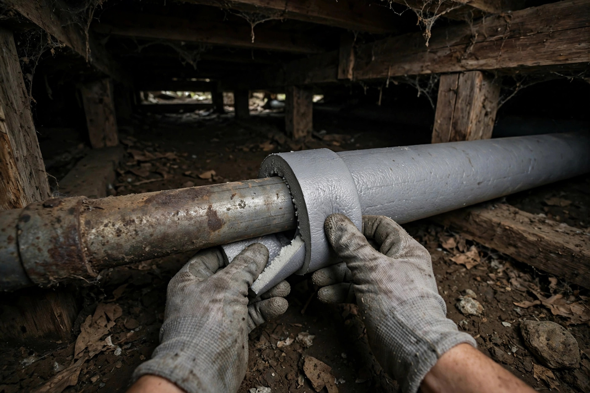
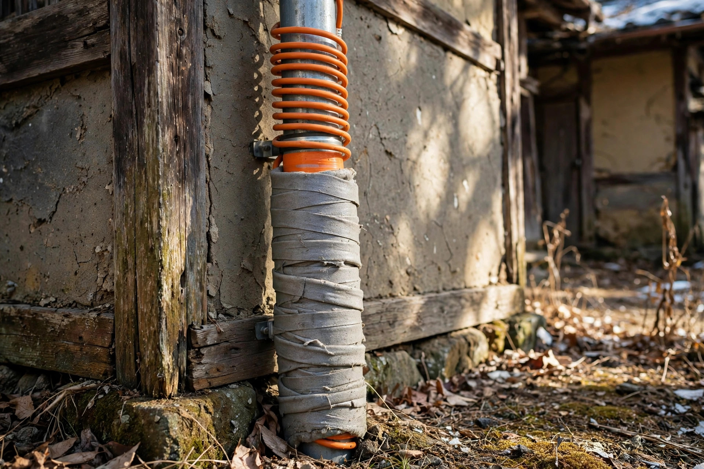

古民家の水道管凍結対策｜保温チューブ・凍結防止帯・水抜きの基本

古民家の冬支度で、後回しにすると痛い目を見るのが水道管の凍結対策です。朝、蛇口をひねっても水が出ないだけならまだしも、管の中で氷が膨張して配管が破裂すると、解けたあとに水漏れが始まって修理費がかかります。古民家は配管が屋外や床下に露出している部分が多く、今の家より凍結の条件がそろいやすい。寒さが本格化する前に手を打つのが基本です。
まず「危ない場所」を知る
水道管が凍りやすいのは、外気温がマイナス4℃前後まで下がる夜です。とくに危ないのは次の場所です。
- 屋外に露出している配管と水栓（庭の立水栓など）
- 北側の壁際を通る配管（日が当たらず、風も当たりやすい）
- 床下の配管（冷気がたまりやすい）
- あまり使っていない部屋・離れの水まわり
対策はこの「危ない場所」から優先して行います。家中の配管を全部やる必要はありません。
対策1：保温チューブを巻く（一番安くて基本）
露出配管には、発泡ポリエチレン製の保温チューブを被せます。筒に切り込みが入っていて、配管に被せて継ぎ目をテープで留めるだけ。1mあたり数百円で、工具もほぼいりません。曲がり部分や蛇口の根元は、保温テープを巻いて補います。

屋外で使う場合は、紫外線で劣化しにくい耐候性タイプを選ぶか、上からビニールテープを巻いて保護すると長持ちします。配管の外径に合った内径のものを選ぶのが大事で、ゆるいと隙間から冷気が入ります。
対策2：凍結防止帯（ヒーター）を巻く
保温だけでは心配な場所、とくに屋外の水栓や北側の露出配管には、電熱式の凍結防止帯を巻きます。サーモスタット内蔵型なら、管の温度が約3℃まで下がると自動で通電し、約10℃で止まるので、つけっぱなしでも電気代が膨らみにくいです。その上から保温テープや保温チューブを巻いて仕上げます。

注意点は2つ。ひとつは、ヒーターを重ね巻きしないこと（発熱が集中して危険）。もうひとつは、配管の材質に合った型を選ぶこと。金属管専用のものを樹脂管（塩ビ・ポリエチレン）に使うと熱で傷める恐れがあるので、「給湯・給水管兼用」など対応管種を必ず確認します。近くに屋外コンセントが必要な点も、設置前に確認を。
対策3：水抜きと、冷える夜の応急策
年末年始などで数日家を空けるときは、水抜き栓（止水栓）から配管の水を落としておくのが確実です。水がなければ凍りようがありません。離れや使っていない水まわりも同様です。
そこまでしなくても、冷え込みが厳しい夜だけなら、蛇口から水を糸のように少量流しっぱなしにする方法もあります。水が動いていると凍りにくくなります。ただし水道代がかかるので、あくまで応急策です。
凍結対策で使うアイテム
- 保温チューブ（発泡ポリエチレン・筒型）
- 保温テープ（曲がり部分・仕上げ用）
- 凍結防止帯（サーモスタット内蔵型）
- 水栓カバー（屋外の蛇口用）
同じ用途のものはAmazonでも探せます（PR）
ガオナ 保温チューブ 1m GA-KE026（給水管の凍結防止用）
凍ってしまったら
朝、水が出なくなっていたら、まず凍結を疑います。対処は「ゆっくり温める」が原則です。
- 凍った部分にタオルを巻き、ぬるま湯（熱湯ではない）をゆっくりかける
- ドライヤーの温風を当てるのもよい
- 熱湯を直接かけるのは厳禁。配管が割れたり、やけどの危険がある
- 解けたら水漏れがないか確認。破裂していたら止水栓を閉めて水道業者へ
まとめ
- 凍結はマイナス4℃前後から。危ないのは屋外・北側・床下の露出配管
- 基本は保温チューブ、心配な場所には凍結防止帯（サーモスタット付き）
- 長期不在は水抜きが確実。冷える夜の応急策は少量の流しっぱなし
- 凍ったら熱湯は厳禁。ぬるま湯でゆっくり解かす